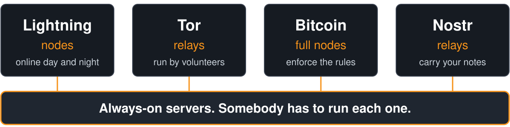
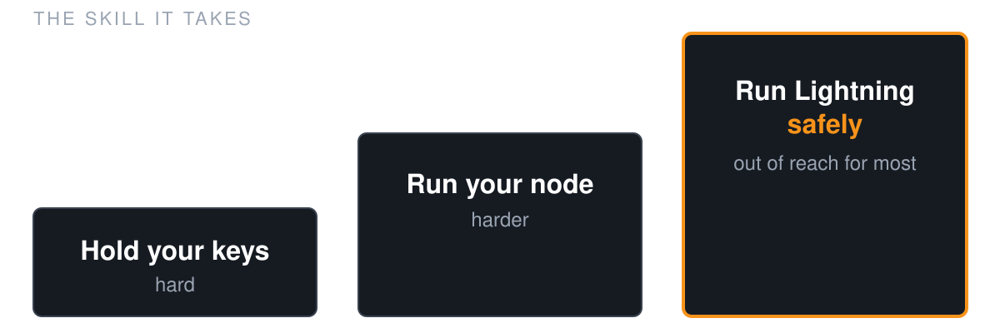
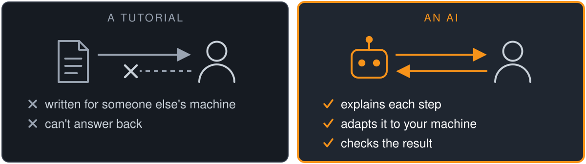
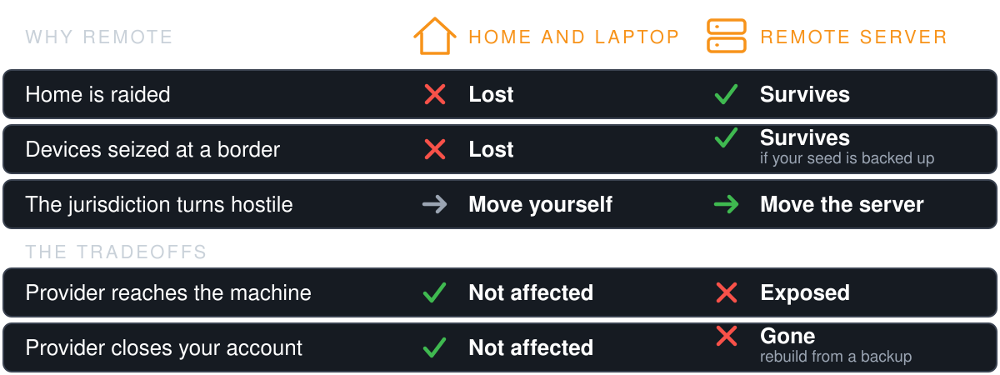
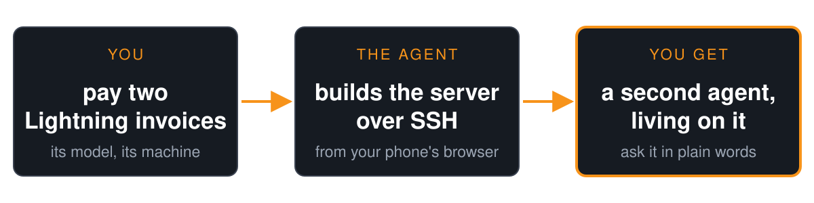
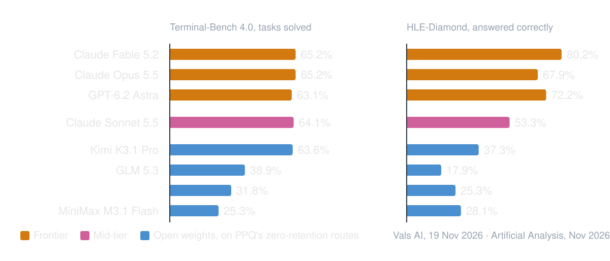
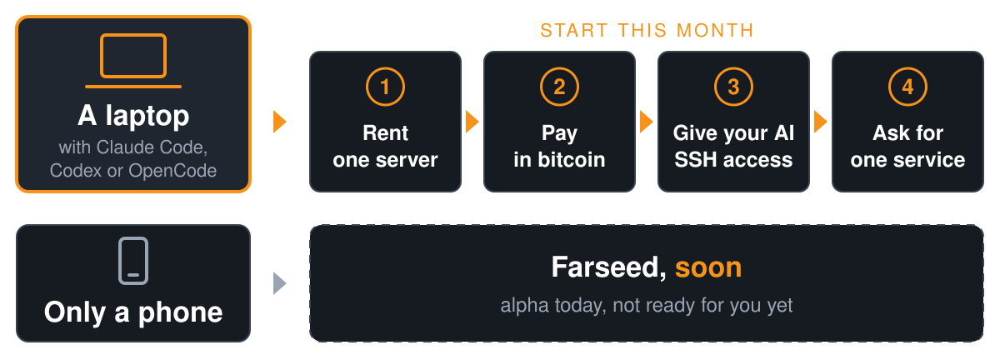
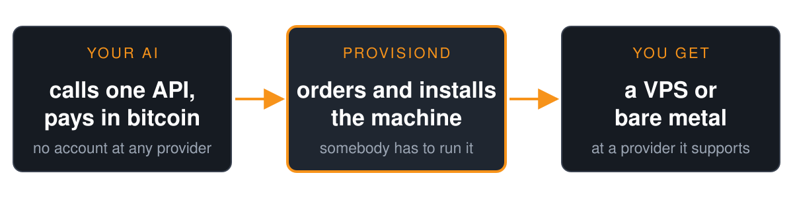
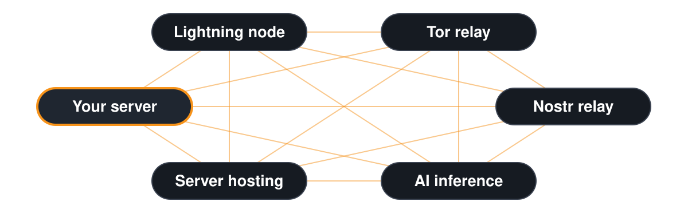

A remote Linux server, operated by AI and paid for in bitcoin, is the missing piece of digital sovereignty.
An alpha proof of concept already starts one from a phone.
Mobility is freedom
No mobility
The peasant is always lacking in mobility. He is as attached to the ground as the plants he cultivates.
Franz Oppenheimer, The State (1908)
Physical mobility
… medieval towns that served as safe havens for serfs escaping feudal subjugation. Their role may prove analogous to the role of new jurisdictions in accommodating the coming exit from nation-states.
James Dale Davidson and William Rees-Mogg, The Sovereign Individual (1997)
Mobility in cyberspace
We must declare our virtual selves immune to your sovereignty, even as we continue to consent to your rule over our bodies.
John Perry Barlow, “A Declaration of the Independence of Cyberspace” (1996)
Mobility in cyberspace, today
Cyberspace is the new flag, arguably the most important one, which takes away the necessity of many earlier flags.
Katie The Russian, “Short The State”, Bitcoin Magazine (2022)
The gap Bitcoin left
Bitcoin made money mobile. What about the rest?
Your…
…lives on someone else’s computer
Mail
Gmail, iCloud Mail
Files, photos, phone backups
iCloud, Google Drive, Dropbox
Code
GitHub
Chat
iMessage, WhatsApp, Telegram
Payments
Visa, Mastercard, bank transfers
Coins, for many people
an exchange
They can lock it, delete it, read most of it. Encryption hides the message, not the metadata.
Yours means you hold the keys and can leave on your own terms.
Cypherpunks run servers
People must come and together deploy these systems for the common good.
Eric Hughes, “A Cypherpunk’s Manifesto” (1993)
Cyberspace is made of servers

We need these services run by cypherpunks.
It was never the law. It was skill.

Many people don’t support Lightning because they are afraid of running a server.
That barrier is falling.
What changed
AI is the sysadmin
“I’ve run Linux on desktops and servers for 25 years. AI is better at it than I am.”
You describe what you want. It does the rest, on an open platform.
You were already following instructions

If you follow something, follow a frontier AI.
For keys and funds, still verify.
The proposal
Your server in cyberspace
At least one always-on remote Linux server. AI operates it. Bitcoin pays for it.
Why remote, and the tradeoffs

You gain redundancy and a choice of jurisdiction. You pay with trust in a provider.
Shrink the tradeoff: a VPS to learn, bare metal for anything serious.
Cypherpunks write code
Farseed
An AI agent in your phone’s browser.

Alpha proof of concept · github.com/douglaz/farseed
Demo
1 Pay for AI credit 2,000 sat
2 Pay for a server 100 sat
3 The agent builds it 8 min of work, one approval from me
4 Ask the server's agent
Set up a pruned Bitcoin node on this machine and connect it to my Tailscale. Tell me the latest block when it's synced.→ synced, block 976,784
What's the balance of this watch-only wallet: xpub6D7a…peu→ 5,000 sat. No seed or private key needed.
Add a Lightning node and give me a read-only link for Zeus over Tailscale.→ lnd 0.21.8, synced, read-only link
5 My phone shows the node
69 minutes of real time, in 2
What just happened
This run: DeepSeek V4.1 Flash through PPQ, on recipes I wrote.
Which AI should run it?

DeepSeek follows a recipe. For the main agent, use a frontier model.
Games nobody explains to the model (ARC-AGI-3): Fable 5.2 scores 81%. DeepSeek V4.1 Flash 1017 scores 0.2%.
Two objections
“Isn’t an online server unsafe?”
Nothing is absolutely safe. Offline keys get stolen, coerced and lost.
AI helps attackers. It helps defenders too: long-standing bugs are being fixed.
The great hardening: three-letter agencies and black hats are losing leverage.
Not “put everything online”. Run what should be online, well.
“Isn’t rented AI giving up sovereignty?”
The ideal: your own inference.
Until then: pay-per-use, privacy-focused vendors.
A frontier model hardening your setup beats a weak local one doing little.
Bootstrapping always starts on something you don’t control.
Start with what you have

Experiment. Operating servers is an essential cypherpunk skill.
A service we need: provisiond

It would make everyone more powerful. Running it takes servers and a lot of DevOps skill.
A specification today, not yet a service · github.com/douglaz/provisiond
Cyberspace must be ours

A network of sovereign individuals, providing services to each other.
If you build services: take Lightning, and offer an API that an AI in a browser can call.
An objection, and Satoshi’s answer
“You will not find a solution to political problems in cryptography.”
Yes, but we can win a major battle in the arms race and gain a new territory of freedom for several years.
Satoshi Nakamoto, Cryptography mailing list, 6 November 2008
It is a hot wallet: the keys live on a machine that is online.
Don’t fund your node until you have backed up the seed and asked the AI for a proper hardening and update process.
After that, keep on it what you’d carry in your pocket.
It is a big learning opportunity, for Bitcoin and for AI. Try it, cautiously.
Decentralization still needs plebs running nodes. With AI, a pleb can run one at a semi-professional level.
Is Linux the best server OS in the age of AI?
A fair, open question. Try the BSDs and anything new, especially formally verified work such as seL4. AI is opening possibilities.
What I’ll never suggest is a proprietary system for what you run and hold your keys on. Black boxes will be broken.
A supplier you can replace tomorrow is a different matter.
On mobile: GrapheneOS, or something similar.
Open-source alternatives
Instead of…
…you can run
Gmail, iCloud Mail
Stalwart, mailcow, Mail-in-a-Box
iCloud, Google Drive, Dropbox
Nextcloud, Immich for photos, Syncthing, restic for backups
GitHub
Forgejo, Gitea, Radicle
iMessage, WhatsApp, Telegram
Matrix, SimpleX, your own Nostr relay
Visa, Mastercard, bank transfers
Lightning, BTCPay Server
An exchange
Bitcoin Core, lnd or Core Lightning, your own keys
A hosted password manager
Vaultwarden
Mail and passwords are the hardest to run yourself. Start with files or code.
Other ways to build this stack
Role
In the demo
Open alternatives
Agent on the server
Hermes Agent
OpenCode, Goose
Inference
PPQ
Routstr, paid in ecash · Maple, in attested enclaves · your own, with llama.cpp
Lightning
lnd
Core Lightning, LDK
Private network
Tailscale
Headscale, NetBird, plain WireGuard
Bitcoin on NixOS
our recipes
nix-bitcoin (unmaintained since August 2026)
A node at home instead
StartOS, RaspiBlitz
Where this could go
A cosigning federation, so a key on a server can’t spend alone: github.com/douglaz/btc-policy-spec
Provisioning as its own service: github.com/douglaz/provisiond
More providers that take Lightning and can be driven from a browser.
Where are my keys in the browser?
An encrypted journal in the browser’s private file system: AES-256-GCM, key derived from your passphrase with PBKDF2, 600,000 rounds.
While unlocked, the keys sit in a background worker. The visible page holds no key and no wallet. It shows the recovery words once, when you back them up.
Someone with your unlocked phone can use the app as you, but can’t read the keys out.
A malicious extension could capture your passphrase as you type. Use a dedicated browser profile and a real passphrase.
Every browser obstacle
Not every provider accepts Lightning, though many accept on-chain bitcoin.
Many have no API to launch a machine, or only after a manual first launch.
APIs without CORS headers can’t be called from a page.
SSH needs a relay, so the host key must be known in advance.
The page can’t pay: a human pays each invoice, on purpose.
Mobile browsers suspend background tabs, so the agent must survive interruption.
What the demo still leans on
Manual steps: paying two invoices, signing in to T3 Code once, approving one Tailscale sign-in.
Third parties: PPQ for inference, the SSH relay we run, the hosted T3 Code sign-in, Tailscale.
Worth keeping even after bootstrap: a hosted password manager, mail, a mesh VPN.